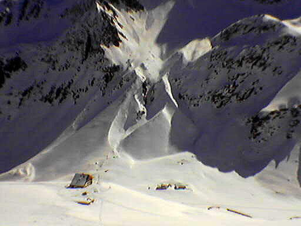

Roter Kogel
As a wanna-be backcountry skier, I was really excited when a friend from work told me about a ski ascent of the Roter Kogel from the Forschtal valley of the Stubai Alps. The mountaineer in me loved the long climb, almost 2000 meters. And the beginning skier loved the gentle terrain that wouldn’t scare me too much. I don’t own a car yet, so I was keenly disappointed to be driven back by heavy snowfall one weekend when I rented a car. A second chance came because our neighbor Riki was keen to join me and had a car of her own! Good weather sealed the deal, so we found ourselves driving along the Inn valley past Innsbruck early Sunday morning.
The trailhead is about a kilometer up the Forsch valley from Sellrain. We parked and began skinning up along a road which becomes a sled run in the winter. We grumbled a little because occasionally a car would come along, probably making for the Forsttal Huette a few kilometers up the road. Once past that hut, the trail thinned to ski and sled tracks, and the forested valley opened up to reveal peaks on either side. Then the valley narrowed below the Potsdamer Huette, with really enticing views of snowy peaks at the head of the valley. We saw two skiers making their way far up the valley, possibly to climb the Wildkopf or even Hohe Villerspitze. A family of sledders purred down the track as we made the final climb to the Potsdamer Huette. Stepping into the hut to use the W.C., our eyes failed to adjust from the bright sun and snow outside, giving the interior and scattered inhabitants a hovel-like cast. A dim figure blinked at me from a bench, seeming to reach out a palsied hand! Finally our eyes adjusted, only to see the hut manager sadly telling us we’d have to buy something to stay inside. So we found a sunny patch of bare ground outside where I invented a sandwich embedded with chocolate. Riki told me this was a well-known idea in Germany, where a special long-thin piece of chocolate is made to serve as filling. Nutella has captured that market in recent years.
We realized to our dismay that we were actually pretty tired, and wondered how we’d find the energy for the additional 800 meters to the Roter Kogel. Riki is a new mom, and was up late with the baby the night before. I, an old hand with 16 month olds, slept with callous abandon through any cries of supplication. After the initial switchbacks, she got a headache. We were in a beautiful spot traversing under the Kastengrat, and noticed tracks going down a valley to reach a road and building far below in the Almindalm. “Let’s go down that way,” we decided.
After some ups and downs, we entered a broad gentle high valley called the Widdersberg Schafalm. The view of the Roter Kogel far away at it’s head was dismaying! A winter of short, 800 meter hikes was insufficient diet for such a long climb, but we resolved to push on anyway. The weather was perfect, and snowy, rocky ridgelines on either side made us happy to be in such a wild place. By the middle of the valley though, Riki’s headache was worse, so she gave me 45 minutes to keep going while she rested on a rock and made various SMS calls.
I pressed on, eager to at least reach the ridge crest left of the summit, and gain a view of high mountains to the south. Once above 2600 meters I started to feel the altitude too, but hurried on with a case of “summit fever.” I could see merrymakers milling on the summit, and longed to see the sublime views they were frittering away with idle chit-chat! Finally I was switchbacking to the crest, soaking in a grand view of nameless (to me) mountains. Looking off east, there was one mountain I recognized from last November - the Grosse Ochsenwand and friends (The Kalkkoegel), which I visited by a spectacular via ferrata. The Schlicker Seespitze showed me a foreboding vertical wall.
I overstepped my 45 minute timelimit by 3 minutes to stand by the summit cross and look down to Praxmar. Truly alpine summits were in every direction, and my mind festered unhealthily with fantasies of traverses and loops.
The descent back to Riki was perfect, making turns down a 25 degree slope to long schusses on lower angle terrain. Riki had worried about the long low angle sections of the route, thinking that in softening snow we would grind to a halt on the descent. But I found it took very little to gain too much speed even there. I screeched up to her rock with a flourish and we rode like bats down the long valley, following tracks down to the north rather than turning east to reach the Potsdamer Huette. Riki is a very good skier, and I tried to pick up tips from her. Though often as not I found myself snowplowing or falling or just resting my quivering legs. The 1800 meter descent seemed to take a lifetime, though it was only an hour. Moments of terror and delight overlapped each other as I fought pitched battles with chopped up heavy snow, or tight icy trails in forest near the road. Finally on the long forest road I aquitted myself pretty smartly, until a mother and child walking up with a sled looked at me strangely. This shattered my confidence, and I plowed into the side of the road, nearly losing a ski and grinding to a halt with a cry of anguish. Speechless, they stared as I re-composed my dignity and skied by, whistling.
We left Munich at 5:30, reaching the trailhead at 7:15 am. We started skiing at 7:30 am, and I reached the summit at 12:30 pm. We reached the car at 1:40 pm. Now we could get back home and pretend to help with the kids while we secretly napped :-).
Both trip participants gnash their teeth over the lack of pictures. Is a camera really so hard to remember? Apparently…

Before remarking on the terrible quality of this picture, think how…it’s
pretty good for a cell phone :D. But seriously, having forgotten our real
cameras, this single picture was the best we could do. We are switchbacking up a
steeper slope above the Potsdamer Hut. The Fotschtal valley floor with another
Hut can be seen even lower down.
{kind=link}